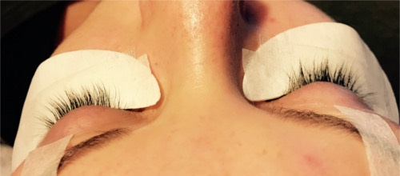
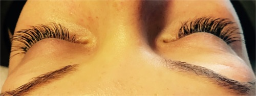
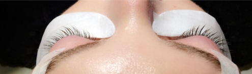
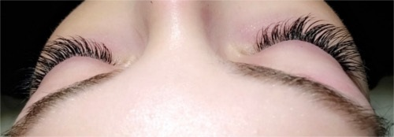

Grâce à ce concept, tout est possible : effet naturel et glamour. Ce procédé exceptionnel de cil à cil permet à toutes les femmes d’avoir un regard de velours dès le réveil. La qualité des produits est irréprochable pour une performance et un confort inégalé.
Qu’est-ce que c’est ?
Tout comme les extensions capillaires, les extensions de cils sont collées sur le cil naturel de la personne. Elles peuvent être en soie, en vison ou en micro-fibre. Il en existe de différentes formes et longueurs selon les cils naturels de la personne mais aussi selon l’effet recherché.
Pour qui ?
Cette technique s’adresse à tout le monde, que vous ayez des cils trop fins, trop courts, pas assez recourbés ou bien trop clairsemés, vous devriez être conquise! On peut également avoir recours aux extensions de cils par soucis de gain de temps. Se maquiller le matin n’est pas toujours évident pour tout le monde.
Comment ça se passe ?
Avant la pose, la praticienne dépose des patchs adhésifs sous vos yeux pour isoler les cils inférieurs et hydrater par la même occasion le contour de l’oeil.
Les extensions sont ensuite posées une à une à 3mm de la racine des cils. La colle utilisée est à base de cyanoacrylate médical (colle utilisée pour soigner les plaies lorsqu’on ne veut pas suturer) et ne présente donc aucune contre-indication.
Nos produits
Nous utilisons des cils composés de fibres synthétiques et des cils de soie. Cette technique permet de modeler le regard de manière très subtile en travaillant différentes longueurs, épaisseurs et courbures. Plus besoin de maquiller ses cils avec du mascara : ils sont naturellement longs, recourbés et noirs.
Quand ils sont correctement posés, les cils durent jusqu'à 2 mois avec remplissage. Un cil naturel tombe en général tous les 60 à 90 jours et est naturellement remplacé par un nouveau cil. Lorsque le cil meurt, l’extension tombe aussi. Les remplissages se font toujours sur des cils neufs. Suite à une pose d' Extensions de cils, des retouches sont généralement effectuées toutes les 2 à 4 semaines (comme pour les faux ongles).
Vos nouveaux cils sont longs, épais et beaux! Ils s'adaptent parfaitement à votre style de vie. Ils résistent à l'eau, à la transpiration et aux larmes. Vous pouvez nager, vous laver et faire du sport sans inquiétude. Demandez à votre technicienne en extension de cils un guide d'entretien pour vos nouveaux cils.
Il pourrait rester quelques légères traces sur la partie intérieure des vêtements (comme pour le maquillage,) mais elle est soluble à l’eau et donc, se lave à l’eau claire.
Après l'application, ne pas mouiller les cils pendant au moins 3 heures, le mieux étant d'attendre 6 heures afin que la colle sèche parfaitement.
Un des principaux avantages des cils, c'est que vous n'aurez plus besoin de mascara. Cependant, si vous souhaitez tout de même en appliquer, utiliser un mascara spécifique pour les extensions. N'utilisez pas de mascara Waterproof cela risquerait de provoquer une chute prématurée de vos extensions.
Le maquillage et le démaquillage doivent être adaptés aux extensions, il ne faut pas utiliser de corps gras !
Les extensions de cils ne sont jamais directement posées sur la paupière. La procédure est indolore et n'endommage ni vos paupières ni vos cils naturels et ceci grâce à la haute qualité de ses produits, mais également grâce à sa technique minutieuse.
Les extensions de cils sont en fibres synthétiques ou en soie, de différentes courbures, épaisseurs et longueurs, qui donnent un aspect et un toucher naturel. Cette diversité d' extensions crée un effet naturel et souligne votre regard. Laisser place au naturel et à la fantaisie.
Votre technicienne observera puis vous conseillera sur le design le mieux adapté à la forme de vos yeux. Ensuite, vous serez confortablement installés et les yeux fermés. Une technicienne certifiée vous appliquera les extensions, cil par cil en utilisant une colle spéciale exclusivement réservée à cet effet.
Note: En général, la prestation s'apprécie le lendemain de la pose de cils.
Pendant 6 heures suivant la pose
Evitez d'exposer vos extensions de cils à l'eau, au sauna, aux vapeurs ou à une forte chaleur.
Pensez à être délicat dans tous vos gestes. Ne tirez jamais sur vos extensions de cils. Ne frottez pas vos yeux.
Veuillez ne pas appliquer de produits cosmétiques sur vos cils ou en bordure de paupière hors produits spécifiques.
Nous vous conseillons de dormir dans une position qui ne gêne pas vos cils afin d'éviter qu'ils ne s'emmêlent entre eux pendant le process de séchage.
Evitez tout traitement cosmétique sur le contour de l'oeil.
Entretien quotidien
Nettoyez/démaquillez vous quotidiennement les cils et la paupière avec les produits spécifiques à l'aide des applicateurs sans fibres que votre technicienne vous aura fourni afin d'assurer une hygiène et une santé optimales de vos cils.
Evitez tout traitement cosmétique sur le contour de l'oeil.
N'utilisez pas de disques démaquillants car les fibres peuvent s'accrocher à vos extensions.
Brossez matin et soir vos cils avec la brosse pour les déployer au maximum.
Appliquez le mascara du milieu vers la pointe de vos cils. Ne touchez pas le bord de vos paupières.
Pour des cils soyeux et bien hydratés, utilisez le soin protecteur en petite quantité.
Vous pouvez utiliser le recourbe cils chauffant pour un effet doux. N'utilisez pas de recourbe cils mécanique car il peut casser vos cils naturels et vos extensions.
Avant
Après
Avant
Après
Pose
Naturel
Remplissage
Tarifs
75 €
30 € - 3 semaines
50 € - 4 semaines